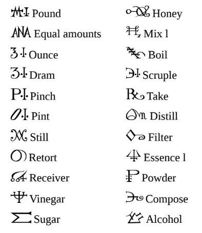

Recipe Grimoire
Ancient Apothecary Symbols & Weights
Historical herbalists used shorthand symbols to record formulas discreetly, avoiding scrutiny from authorities of the time. These symbols appear in older grimoires and apothecary texts and served as a practical shorthand across centuries of herbal practice.

The actual glyphs vary by manuscript tradition and source. Consult the original source image for accurate symbol rendering.
Ancient Table of Weights and Measures
Abbreviations
| Abbreviation | Meaning | Abbreviation | Meaning |
|---|---|---|---|
| t | Teaspoon | g | Gram or grains |
| T | Tablespoon | " | One inch |
| C | Cup | M or min | Minimum |
| cc | Cubic centimeter | oz | Ounces |
| dr | Drachm or dram | pt | Pint |
| f3 fl dr | Fluid drachm or dram | qt | Quart |
| f3 fl oz | Fluid ounce | lb | Pound |
| ' ft | Foot or feet | CS | Scruple |
Solid and Fluid Equivalents
| Unit | Solid Equivalent | Fluid Equivalent |
|---|---|---|
| Grain | 1/20 of a scruple | — |
| A few grains | Less than 1/8 teaspoon | 5 drops or minims |
| 15 grains | — | 15 drops or minims |
| 20 grains | — | 20 drops or minims |
| 60 grains (1 dram, 3 scruples) | — | 60 drops or minims, or 1 fluid dram |
| Scruple | 20 grains, or 1/3 dram, or 1/3 teaspoon | 20 drops or minims |
| 3 scruples | 60 grains, or 1 teaspoon, or 1 gram dram | 60 drops or minims, or 1 fluid |
| Pennyweight | 24 grains, or 1/20 ounce | 24 drops or minims |
| Dram | 3 scruples, or 1 teaspoon, or 60 grains | 60 drops or minims, or 1 fluid ounce |
| Teaspoon | 1/3 tablespoon, or 1 dram, or 60 grains, or 3 scruples | 60 drops or minims, or 1 fluid dram |
| 2 teaspoons | 1 dessertspoon, or 2 drams | 120 drops or minims, or 2 fluid drams |
| Tablespoon | 3 teaspoons, or 15 grams, or 1/2 ounce | 180 drops or minims, or 15 cc, or 3 fluid drams |
| 2 tablespoons | 30 grams, or 1/8 cup, or 1 ounce, or 8 drams | 1 fluid ounce, or 8 fluid drams, or 30 cc |
| 4 tablespoons | 1/4 cup | 2 fluid ounces, or 60 cc |
| 5 1/3 tablespoons | 1/3 cup | — |
| Gill | 8 tablespoons, or 1/2 cup | 4 fluid ounces, or about 125 cc |
| 2 gills | 16 tablespoons, or 1 cup, or 8 ounces | 8 fluid ounces, or 1/2 pint |
| Ounce | 16 drams (avoirdupois), or 1/8 cup | 8 fluid drams |
| 16 ounces | 2 cups, or 1 pint | 128 fluid drams |
| 32 ounces | 1 3/4 pounds, or 4 cups | 32 fluid ounces, or 2 pints, or 1 quart |
| Pound | 16 ounces (avoirdupois), or 12 ounces (troy) | — |
| 1 wineglass | 3 to 4 tablespoons | 1 1/2 to 2 fluid ounces |
| 1 teacup | 8 to 10 tablespoons | 4 to 5 fluid ounces |
Apothecary's Weight
| Quantity | Equals | In Grains |
|---|---|---|
| 20 grains | 1 scruple | 20 grains |
| 3 scruples | 1 dram | 60 grains |
| 8 drams | 1 ounce | 480 grains |
| 12 ounces | 1 pound | 5,760 grains |
Avoirdupois Weight
| Quantity | Equals | In Grains |
|---|---|---|
| 27 1/4 grains | 1 dram | 27+ grains |
| 16 drams | 1 ounce | 473+ grains |
| 16 ounces | 1 pound | 7,000 grains |
Fluid Measure
| Quantity | Equals |
|---|---|
| 60 minims | 1 fluid dram |
| 8 drams | 1 fluid ounce |
| 20 ounces | 1 pint |
| 8 pints | 1 gallon |
Metric Conversions
Volume
| US Volume Measure | Metric Equivalent |
|---|---|
| 1/16 teaspoon | 0.3 milliliter |
| 1/8 teaspoon | 0.5 milliliter |
| 1/4 teaspoon | 1.2 milliliters |
| 1/2 teaspoon | 5.0 milliliters |
| 1 teaspoon | 5.0 milliliters |
| 1 tablespoon (3 teaspoons) | 14.8 milliliters |
| 2 tablespoons (1 fluid ounce) | 29.6 milliliters |
| 1/8 cup (2 tablespoons) | 29.6 milliliters |
| 1/4 cup (4 tablespoons) | 59.1 milliliters |
| 1/2 cup (4 fluid ounces) | 118.3 milliliters |
| 1 cup (16 tablespoons) | 236.6 milliliters |
| 1 pint (2 cups) | 473.2 milliliters |
| 1 quart (4 cups) | 946.4 milliliters |
Weight
| US Measure | Metric Equivalent |
|---|---|
| 1/16 ounce | 1.8 grams |
| 1/8 ounce | 3.5 grams |
| 1/4 ounce | 7.0 grams |
| 3/4 ounce | 21.3 grams |
| 1 ounce | 28.3 grams |
| 1 1/2 ounces | 42.5 grams |
| 2 ounces | 56.7 grams |
| 3 ounces | 85.0 grams |
| 4 ounces | 113.4 grams |
| 8 ounces | 226.8 grams |
| 10 ounces | 283.5 grams |
| 12 ounces | 340.2 grams |
| 16 ounces | 453.6 grams |